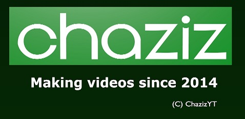

Background: Chaziz Productions is where ChazizYT videos are produced, It first did not had a logo and just took the Chaziz intro. However it's getting it's own logo.
Scrapped Logo
Nicknames: "CGI Chaziz"

Logo: A green 3D rectangle is seen, "chaziz" can be seen flying to the rectangle. Then the text "Making videos since 2014" appears with a little "(C) ChazizYT" below it.
Availability: It was planned to be used on Chaziz videos from 2019 but it was never introduced, Logo can be seen on MoreChaziz.
1st Logo (TBA)
Logo: Very simillar to the 1st variant of the 6th Chaziz Logo. However it's better animated, has yet to come out